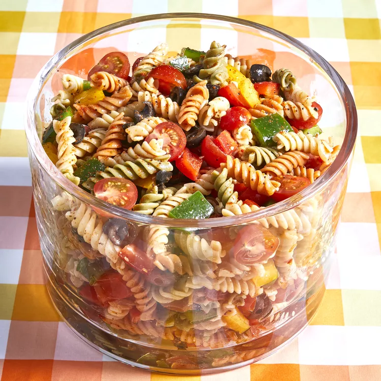

Pasta Salad!

Mouth watering pasta Salad!
Pasta salad (pasta fredda) is a salad dish prepared with one or more types of pasta, almost always chilled, and most often tossed in a vinegar, oil, or mayonnaise-based dressing.
It is typically served as an appetizer, side dish or a main course. Pasta salad is often regarded as a spring or summertime meal, but it can be served any time of year.
Ingredients:
- 1 pound tri-colored spiral pasta
- 1 (16 ounce) bottle Italian-style salad dressing
- 16 tablespoons salad seasoning mix
- 2 cups cherry tomatoes, diced
- 1 (2.25 ounce) can black olives, chopped
Directions to prepare Pasta Salad:
- Bring a large pot of lightly salted water to a boil.
- Cook pasta in the boiling water, stirring occasionally, until tender yet firm to the
bite, about 10 to 12 minutes; rinse under cold water and drain
- Whisk Italian dressing and salad spice mix together until smooth.
- Combine pasta, tomatoes, bell peppers, and olives in a salad bowl.
- pour dressing over salad and toss to coat. Refrigerate salad, 8 hours to overnight.
Back to top of page
Return to main page